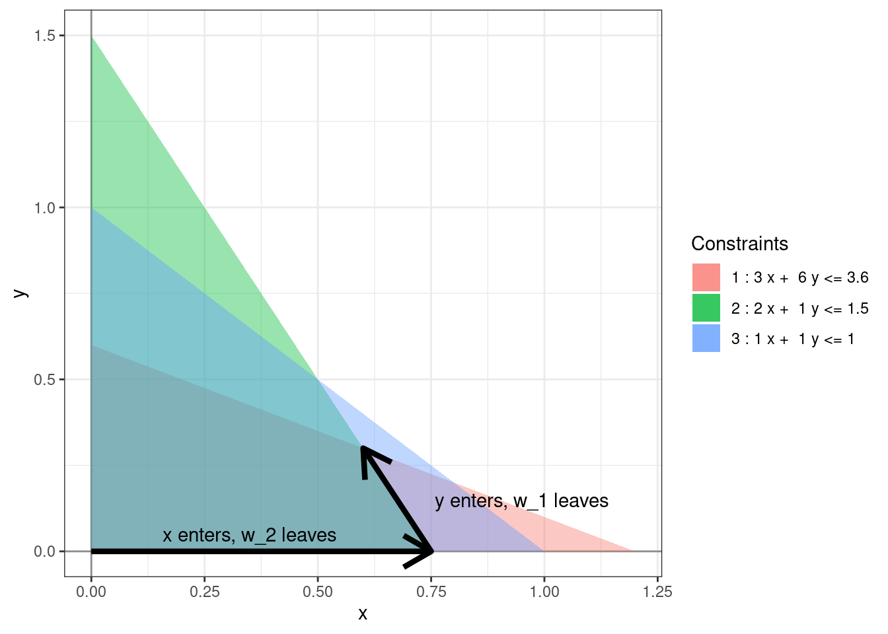

Chapter 3 The Simplex Method
The simplex method is an iterative process for finding a basic feasible solution to a standard linear program that is optimal. It starts at some BFS and in each step moves to an adjacent one with a higher objective value. The following picture shows one possible run of the simplex method for solving the linear program (1.2).
Figure 3.1: A possible run of the simplex algorithm.
In each step, one non-basic variable enters the set of basic variables and one basic variable leaves the set of basic variables. The table below explains how these sets are getting updated in the sample simplex method run in Figure 3.1.
| Leaving variable | Entering variable | Basic variables | Non-basic variables | |
|---|---|---|---|---|
| Start | \(\{w_1, w_2, w_3\}\) | \(\{x, y\}\) | ||
| Step 1 | \(w_2\) | \(x\) | \(\{w_1, x, w_3\}\) | \(\{w_2, y\}\) |
| Step 2 | \(w_1\) | \(y\) | \(\{y, x, w_3\}\) | \(\{w_2, w_1\}\) |

Using this terminology, our goal at each step is reduced to finding which variable enters and which variable leaves. To do this algebraically, we’ll introduce the notion of dictionaries.
Definition 3.1 The dictionary at a basic feasible solution is the set of equations describing the objective function and the constraints in terms of the non-basic variables.
Example 3.1 Consider (1.2) again. At the origin, the non-basic variables are \(x, y\) and hence the initial dictionary is: \[\begin{equation} \begin{array}{rlrrrrr} \mbox{objective} & = & 0 & + & 4x & + & 3y \\ w_1 & = & 3.6 & - & 3x & - & 6y \\ w_2 & = & 1.5 & - & 2x & - & y \\ w_3 & = & 1 & - & x & - & y. \end{array} \tag{3.1} \end{equation}\] After the first step of the simplex algorithm, the non-basic variables are \(w_2, y\). We can write \(x\) in terms of \(w_2\) to get \[\begin{equation*} x = 0.75 - 0.5 w_2 - 0.5 y \end{equation*}\] We can substitute this into the initial dictionary to get the dictionary after the first step: \[\begin{equation} \begin{array}{rlrrrrr} \mbox{objective} & = & 3 & + & (-2)w_2 & + & y \\ w_1 & = & 1.35 & - & (-1.5) w_2 & - & 4.5y \\ x & = & 0.75 & - & 0.5 w_2 & - & 0.5y \\ w_3 & = & 0.25 & - & (-0.5) w_2 & - & 0.5y. \end{array} \tag{3.2} \end{equation}\] Finally, the non-basic variables at the optimal solution are \(w_1, w_2\). We can repeat the above process and get the dictionary for the optimal solution: \[\begin{equation} \begin{array}{rlrrrrr} \mbox{objective} & = & 3.3 & + & (-5/3)w_2 & + & (-2/9)w_1 \\ y & = & 0.3 & - & (-1/3) w_2 & - & 2/9 w_1 \\ x & = & 0.6 & - & 2/3 w_2 & - & (-1/9) w_1 \\ w_3 & = & 0.1 & - & (-1/3) w_2 & - & (-1/9) w_1. \end{array} \tag{3.3} \end{equation}\]
Remark. From the dictionary, one can extract the set of basic variables and the set of non-basic variables by looking at the variables appearing on the LHS and RHS, respectively. Furthermore, by setting the non-basic variables to 0, we obtain the very useful fact that
- the values of the basic variables are simply the constants “\(b_i\)”, and
- the value of the objective function is the constant “\(c_0\)”.
For example, from the final dictionary above, we can immediately see that \(x = 0.6\), \(y = 0.3\), \(w_3 = 0.1\), and the objective value is \(3.3%\) (and non-basic variables \(w_1\) and \(w_2\) are both zero) at the optimal solution.
3.1 The Simplex Step
Suppose we are at a BFS. \(\bar{w}_1, \dots, \bar{w}_m\) be the basic variables, \(\bar{x}_1, \dots, \bar{x}_n\) be the non-basic variables. Let \(\bar{c}_j\), \(\bar{b}_i\), and \(\bar{a}_{ij}\) be the constants appearing in the dictionary at the BFS so that the dictionary is as follows: \[\begin{equation} \begin{array}{rrrrrrrrrr} \mbox{objective} & = & \bar{c}_0 & + & \bar{c}_1\bar{x}_1 & + & \dots & + & \bar{c}_n\bar{x}_n \\ \bar{w}_1 & = & \bar{b}_1 & - & \bar{a}_{11} \bar{x}_1 & - & \dots & - & \bar{a}_{1n} \bar{x}_n \\ \bar{w}_2 & = & \bar{b}_2 & - & \bar{a}_{21} \bar{x}_1 & - & \dots & - & \bar{a}_{2n} \bar{x}_n \\ & & & & & \vdots & \\ \bar{w}_m & = & \bar{b}_m & - & \bar{a}_{m1} \bar{x}_1 & - & \dots & - & \bar{a}_{mn} \bar{x}_n \end{array} \tag{3.4} \end{equation}\]
3.1.1 Entering variable
We want to move to an adjacent BFS with a higher objective value. The current objective function is \[\begin{align*} \bar{c}_0 + \bar{c}_1\bar{x}_1 + \dots + \bar{c}_n\bar{x}_n. \end{align*}\] and the current objective value is \(\bar{c}_0\) as all the non-basic variables \(\bar{x}_j\) are zero. We can move away from the current BFS by increasing one of the non-basic variables \(\bar{x}_j\) from zero to a positive value. The objective value will increase precisely when \(\bar{c}_j > 0\). This then is the criterion for choosing the entering variable. We can think of this as choosing the direction of the simplex step.
Proposition 3.1 (Entering variable) A non-basic variable \(\bar{x}_j\) can be entering if \(\bar{c}_j > 0\).
Example 3.2 In the dictionary (3.1), the objective function is \(4x + 3y\). Hence, both \(x\) and \(y\) can be chosen as entering variables. We can see that there are two different paths along the BFS going from the origin to the optimal solution. In the dictionary (3.2), the objective function is \(3 + (-2)w_2 + y\) and only \(y\) can be the entering variable. In dictionary (3.3), the objective function is \(3.3 + (-5/3)w_2 + (-2/9)w_1\) and there cannot be any entering variable.
3.1.2 Leaving Variable
Suppose we choose \(\bar{x}_j\) as our entering variable. This determines the direction of the simplex step. We next need to figure out the amount by which to increase \(\bar{x}_j\) without leaving the feasible region. The basic variable \(\bar{w}_i\) is related to \(\bar{x}_j\) by the following relation \[\begin{align*} \bar{w}_i = \bar{b}_i - \bar{a}_{ij} \bar{x}_j - \sum \limits_{k = 1, k \neq j}^{n} \bar{a}_{ik} \bar{x}_k. \end{align*}\] As we increase (only) \(\bar{x}_j\), the quantity within the summation remains zero. If \(a_{ij} > 0\), then as we increase \(\bar{x}_j\) the basic variable \(\bar{w}_j\) will decrease. Because we want all the variables to be non-negative, we must always have \(\bar{w}_i = \bar{b}_i - \bar{a}_{ij} \bar{x}_j \ge 0\). This condition must hold true for all such \(\bar{w}_i\). Hence, we get the following criterion for choosing the leaving variable.
Proposition 3.2 (Leaving variable) Suppose \(\bar{x}_j\) is the entering variable. The basic variable \(\bar{w}_i\) can be chosen to be the leaving variable if \[\begin{align*} i = {\arg \min} _{\bar{a}_{ij} > 0} \dfrac{\bar{b}_i}{\bar{a}_{ij}}. \end{align*}\]
If we choose \(\bar{w}_i\) to be leaving then after the simplex step, \(\bar{w}_i\) decreases to \(0\), \(\bar{x}_j\) increases to \(\min_{\bar{a}_{ij} > 0} {\bar{b}_i}/{\bar{a}_{ij}}\), and the objective value increases by \(\bar{c}_j \min_{\bar{a}_{ij} > 0} {\bar{b}_i}/{\bar{a}_{ij}}\).
Example 3.3 In the dictionary (3.1), if we choose \(x\) to be our entering variable then we need to compare the following ratios:
| \(i\) | \(\bar{a}_{ij}\) | \(\bar{b}_i\) | \(\bar{b}_i/\bar{a}_{ij}\) |
|---|---|---|---|
| 1 | 3 | 3.6 | 1.2 |
| 2 | 2 | 1.5 | 0.75 |
| 3 | 1 | 1 | 1 |
We can see that the smallest ratio is obtained for \(w_2\). Hence, it is the only candidate for the leaving variable.
3.2 Tableau Notation
When manipulating a linear system of equations, one can forget the variables and simply perform manipulations on the coefficients using matrices. The same is true for linear programs. We start by rewriting the constraints in the dictionary with all the variables on the LHS and all the constants on the RHS: \[\begin{equation} \begin{array}{rrrrrrrrrrrrrr} \bar{a}_{11} \bar{x}_1 & + & \dots & + & \bar{a}_{1n} \bar{x}_n & + & \bar{w}_1 & & & & & & = & \bar{b}_1\\ \bar{a}_{21} \bar{x}_1 & + & \dots & + & \bar{a}_{2n} \bar{x}_n & & & + & \bar{w}_2 & & & & = & \bar{b}_2\\ & & & & & \vdots & \\ \bar{a}_{m1} \bar{x}_1 & + & \dots & + & \bar{a}_{mn} \bar{x}_n & & & & & & + & \bar{w}_m & = & \bar{b}_m\\ \end{array} \tag{3.5} \end{equation}\] This can then be encoded using the following augmented matrix: \[\begin{equation*} \begin{array}{rrrrrrrrrrr|r} \bar{a}_{11} & & \dots & & \bar{a}_{1n} & 1 & & & & & &\bar{b}_1\\ \bar{a}_{21} & & \dots & & \bar{a}_{2n} & & & 1 & & & &\bar{b}_2\\ & & & & & \vdots & \\ \bar{a}_{m1} & & \dots & & \bar{a}_{mn} & & & & & & 1 &\bar{b}_m\\ \end{array} \end{equation*}\] We add back the objective function, but because of a quirk of algebra we need to add the objective function coefficients as follows: \[\begin{equation*} \begin{array}{rrrrrrrrrrr|r} \bar{a}_{11} & & \dots & & \bar{a}_{1n} & 1 & & & & & &\bar{b}_1\\ \bar{a}_{21} & & \dots & & \bar{a}_{2n} & & & 1 & & & &\bar{b}_2\\ & & & & & \vdots & \\ \bar{a}_{m1} & & \dots & & \bar{a}_{mn} & & & & & & 1 &\bar{b}_m\\ \hline \bar{c}_1 & & \dots & & \bar{c}_{n} & 0 & & 0 & \dots & & 0 &-\bar{c}_0 \end{array} \end{equation*}\] The columns in this augmented matrix correspond to the variables \(\bar{x}_j\) and \(\bar{w}_i\). The columns with the pivots correspond to the basic variables. If \(\bar{x}_j\) is the entering variable and \(\bar{w}_i\) is the leaving variable, then we simply perform elementary row operations and turn the entry \(\bar{a}_{ij}\) into a pivot for its column. Hence, the simplex step is also called the pivot step.
Example 3.4 The tableau corresponding to the dictionary (3.1) is as follows: \[\begin{equation*} \begin{array}{lllll|l} 3 & 6 & 1 & 0 & 0 & 3.6 \\ \boxed{2} & 1 & 0 & 1 & 0 & 1.5 \\ 1 & 1 & 0 & 0 & 1 & 1 \\ \hline 4 & 3 & 0 & 0 & 0 & 0 \end{array} \end{equation*}\] If we choose \(x\) as the entering variable and \(w_2\) as the leaving variable then we need to pivot about the entry \(a_{21}\) using elementary row operations to get the following tableau: \[\begin{equation*} \begin{array}{lllll|l} 0 & 4.5 & 1 & -1.5 & 0 & 1.35 \\ \boxed{1} & 0.5 & 0 & 0.5 & 0 & 0.75 \\ 0 & 0.5 & 0 & -0.5 & 1 & 0.25 \\ \hline 0 & 1 & 0 & -2 & 0 & -3 \end{array} \end{equation*}\] which corresponds to the dictionary (3.2).